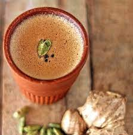
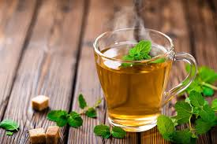
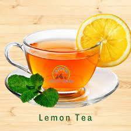
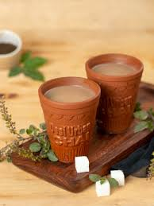

ADARAK CHAI

A delicious, warming Indian Ginger Tea made with fresh ginger roots, tea leaves and milk. This tea has a wonderful aroma and will have you coming back for more! It also includes many health benefits and can be made in just 15 minutes. Serve plain or with Indian snacks like pakoras, aloo tikki, vegetable cutlet, medu vada, or samosas.
MORE
MINT TEA

Mint tea is a traditional tea that’s celebrated in many cultures, including Morocco. Consisting of mint, green tea leaves, and sugar, mint tea can be enjoyed at all times of the day and is commonly served to guests in Moroccan culture.
MORE
GREEN TEA

Green tea as a beverage or dietary supplement is promoted for improving mental alertness, relieving digestive symptoms and headaches, and promoting weight loss. Green tea and its components, including epigallocatechin-3-gallate (EGCG), have been studied for their possible protective effects against heart disease and cancer.
MORE
LEMON TEA

Lemons are rich in vitamins, minerals, and antioxidants. They’ve been used for medicinal and beauty benefits for centuries, and were once thought to have healing powers and protect against poison. Today, lemons are a trendy weight loss aid believed to detoxify our bodies, but more research is needed to back up these claims.
MORE
TULSI CHAI

Tulsi Tea has a myriad of other benefits, although many are still in research to determine definitive results. One thing is clear: Tulsi leaves are good for our bodies in many ways. Order some Tulsi tea blends online today and see for yourself!
MORE